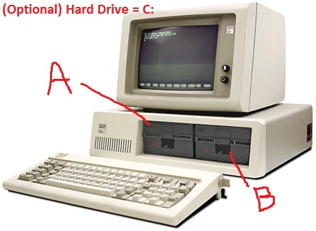

Chapter 2: Navigating the Linux File System¶
What is a File System?¶
A file system is the way an operating system organizes and manages data on a storage device, like a hard drive, SSD, or USB stick. It defines how files are named, stored, retrieved, and organized on the disk.
Think of it like a Library:
- The books are your files.
- The shelves and catalog system are the file system.
It keeps track of where each file is, what it's called, when it was last modified, and who can access it.
Sometime you (the end user) doesn't care at all about files and folders. Other times, it is critical for the proper usage of the program you now need.
for example, when using Google docs, you are not aware of files. You see only documents and pictures, and Google' code is responsible to expose only the nice view without exposing the underlying file structures. But it is there anyhow.
When using Windows or linux, you need to be aware of the file system. For example, if you have two disks (C: and D: ), and disk C: is full, it is YOUR responsibility to delete files and move to other places.
See the table and guess which file system is the oldest:
| File System | Used By | Max File Size | Max Number of Files | Notes |
|---|---|---|---|---|
| NTFS | Windows | 16 TB (practical) | ~4.3 billion | Supports permissions, encryption, compression |
| FAT | Legacy systems, floppy disks | 2 GB | ~65,536 (per volume) | Very old; used in DOS; obsolete for most uses |
| FAT32 | USB drives, older systems | 4 GB minus 1 byte | ~268 million (theoretical) | Widely compatible, but limited by 4 GB file size |
| exFAT | USBs across OSes | 16 EB | ~2.7 million (per directory) | Great for large files; good cross-platform use |
| ext4 | Linux | 16 TB (single file) | 4 billion | Fast, reliable, supports journaling |
| APFS | macOS | 8 EB | Virtually unlimited | Modern, optimized for SSDs |
Is storing file in folders, creating hierarchical tree, the only way? Short answer is no, but practically, the alternatives are not common.
Most desktops and servers still use traditional hierarchical file systems like:
- ext4, XFS, Btrfs (on Linux)
- NTFS (on Windows)
- APFS (on macOS)
These systems are fast, mature, widely supported, and fit the mental model users and software expect — folders, paths, permissions.
Why Alternatives Aren’t Common as Primary FS:
- Compatibility: Most software expects paths like /home/user/file.txt.
- User Expectation: Hierarchies are simple and intuitive.
- Tools & APIs: Most OS APIs and shell tools (like ls, cd, cp) assume a directory tree.
- Performance & maturity: Non-hierarchical systems are often experimental, or good for narrow use cases.
In a future lesson we will dive into more details, but for now, all we need to know about file systems: - data is stored in files. - each file has some metadata ("data about the data") such as "who can access this file", and "when was the file created" - file are stored in folders. In Windows it is called Folder. In linux, directory
Advanced users of linux can choose the file system that is best for a specific job. Once selected, it is rarely changed.
Check yourself¶
- find what file system is used in your OS.
- For the file system you found (e.g. NTFS), is it possible for linux to read contents from this disk?
-
If the answer to the above is yes, does it mean that the file system is a "first class citizen" in linux? (hint: what about write/date/permission/sizes/performance/encryption,snapshots)
-
Let's say you have a disk of 1TB with a file system, and the disk is almost full. Is it possible to add another disk, and "expand" the file system to use both disks? This will allow transparent growth - no more "drive C: is full, D: is empty and I can't move from there to here". Take it to ChatGpt
Is it really that simple?¶
We can spend a few years discussing problems and solutions of file systems. Ask an AI about it, and prepare a long time.
The linux file system structure¶
Regardless of the file system used, the structure (directories) looks the same. It is almost the same for all linux distros and even have a standard, so when you arrive to a new linux machine, you will probably know where to look for certain files.
The Linux file system structure refers to how files and directories are organized in a Linux system. It starts with a single root directory /, and everything branches off from there — unlike Windows, which has separate drive letters (C:\, D:\, etc.).
Having everything (really everything, even if you have 12 disks and network drives) is under "/". This is a very strong abstraction as we will see in the future.
## history lesson In Windows, You are tied to the physical disk installed. But unix was before Windows, so why the latter OS is more primitive?
Windows took it from DOS, missing the opportunity to getting mature.
DOS took it from CP/M -- a tiny OS that Bill Gates based the DOS on (* GPT said: '⭐ Overall Verdict: ✅ Mostly accurate, with some historical simplification' ).
CP/M was tiny OS, targeted for 1980' PC, with one or two floppy drives. There was no reason to write complicated code like in unix.
Why C: ?
In the beginning, only rich people had a hard drive! A PC had two Floppy drives called A: and B: (and sometime only one). The letters were not movable: even if you don't have drive B:, the first hard disk must be C:.
And so in 2025, some 35 years later, we are still suffering from that early sin.

The general tree structure in linux systems¶
There is a Filesystem Hierarchy Standard and more or less, all distros use it. The differences are where exactly some files are stored inside a sub directory. (annoying, but manageable)
/
├── bin/
├── boot/
├── dev/
├── etc/
├── home/
├── lib/
├── media/
├── opt/
├── proc/
├── root/
├── run/
├── sbin/
├── sys/
├── usr/
└── var/
üìÅ Key Directories Explained (just the more useful at this time)
Directory What It Contains
/ The root of the file system — everything starts here
/bin Essential command-line tools (ls, cp, rm, etc.)
/sbin System binaries — tools for root/admin (reboot, fdisk)
/etc System-wide configuration files (passwd, hosts, etc.)
/home User home directories (/home/alice, /home/bob)
/var Variable data like logs, mail, and spool files
/usr User programs and libraries — big area with /usr/bin, /usr/lib, etc.
...
How It's Different from Windows?
| Windows | Linux |
|---|---|
C:\Program Files\ |
/usr/bin/, /opt/ |
C:\Users\ |
/home/ |
Drive letters (C:\, D:\) |
Everything under / |
| Registry for settings | Text config files in /etc/ |
But even in linux you will see some mess. For example, some programs store ALL their configuration data in /etc/. some will store in /etc/ the general configuration and in /path/to/your/.config/prog_name some more value, and some will keep it in god-knows-where. Still better than going into the registry and Roaming/AppData in Windows!
To summarize the above:
- Your files are in /home/your-user-name
- you can read most of the files in the system (i.e. under '/')
- programs are stored in mainly in /bin and /sbin (but we don't care much as long as it works)
- the general tree structure is kept in all linux distros.
- EVERYTHING is under "/" (the root, not to be confused with the "root user").Even remote disks and network drives.
Check yourself¶
- boot into alpine linux (from the previous lesson)
- type exactly this
ls /. You should see similar list of folders. - To see the content of a folder (e.g.
/etc/), typels /etc(don't forget the ENTER key). - Teaser: How do you mark a file as hidden? How do you do it in Windows?
We will go into details when learning simple commands. For now, it is enough to know that ls is list files

Send feedback on
02/ch_02.md